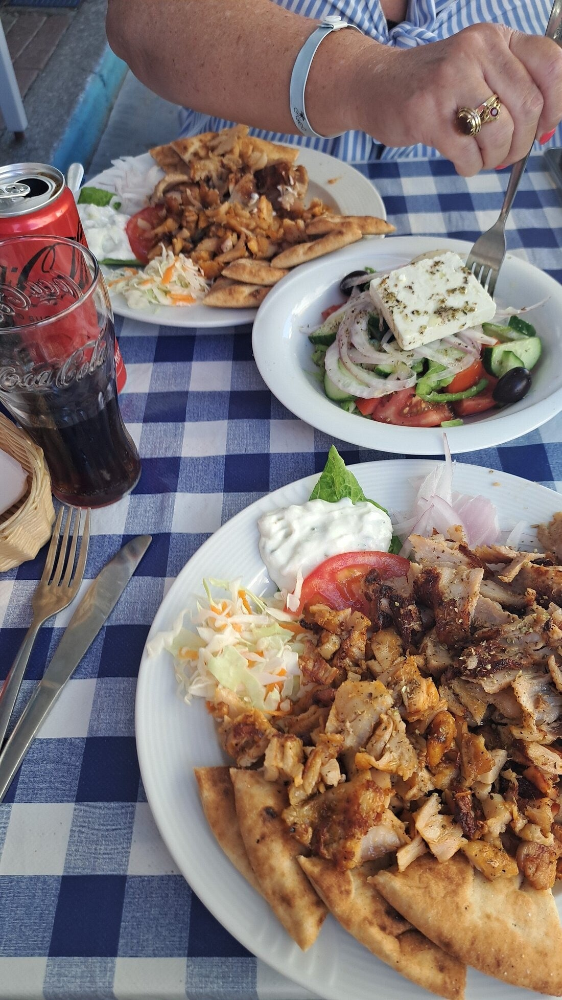
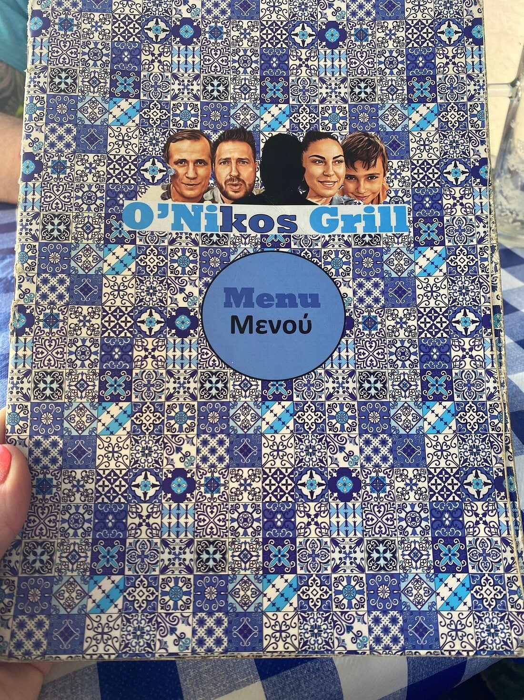
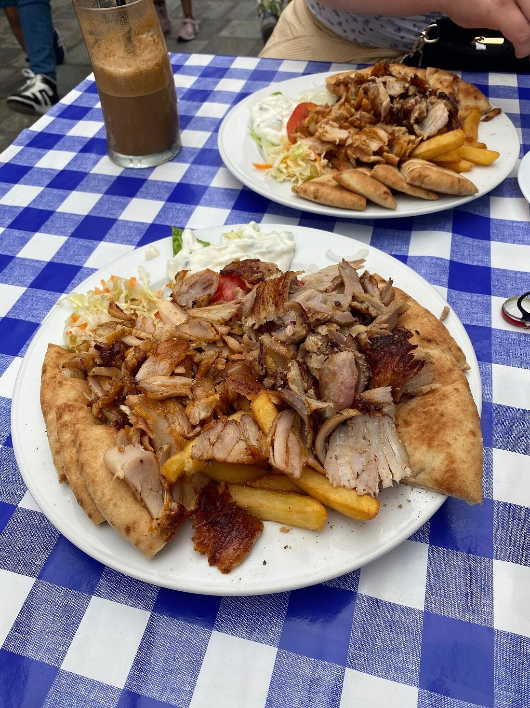
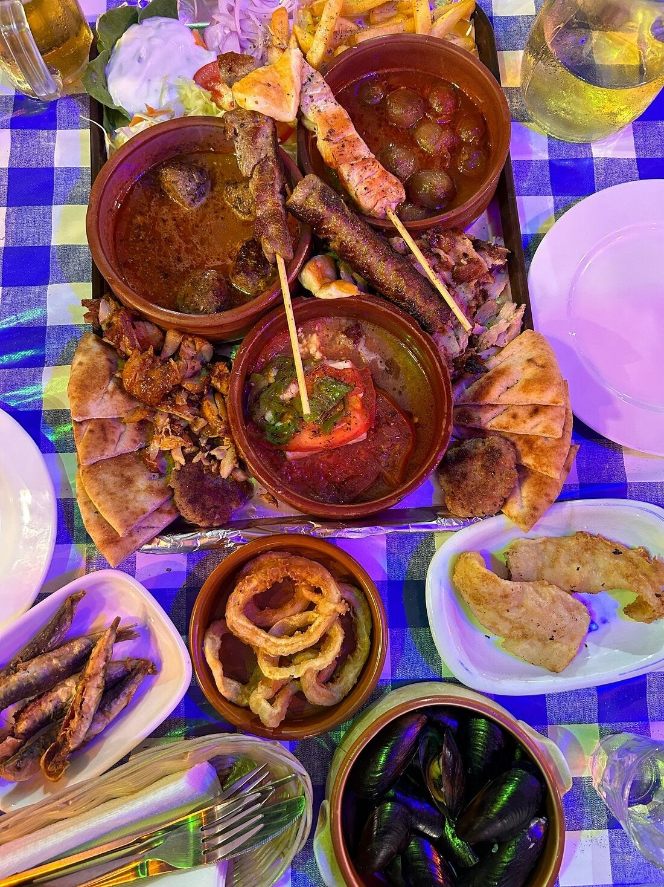

Kos-stad
Gyros & grill
Over dit restaurant
O Nikos Grill is al jaren een van de populairste gyros-plekken in Kos-stad. Een oude, traditionele zaak die door veel locals en terugkerende bezoekers als een van de beste wordt genoemd.

Sfeer & eten
De gyros is sappig en goed gekruid – varkensvlees of kip – met verse groenten van het eiland. Er is ook een tasting platter: handig om met z’n tweeën meerdere specialiteiten te delen.


Praktisch
Informele sfeer, eerlijke porties. Geschikt voor lunch of een goede avondhap zonder gedoe.


